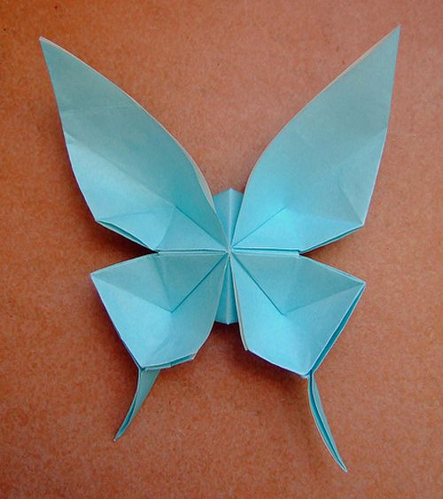

STEPS:
1. Start with a square sheet of paper with the white side up. Fold it in half horizontally, crease it well and
then unfold it.
2.Fold the paper in half vertically, crease it well and then unfold it.
3.Fold the top quarter of the paper along the dotted line to the centre line.
4.Crease this fold well and then unfold it.
5.Fold the bottom quarter of the paper along the dotted line to the centre line.
6.Crease this fold well and then unfold it.

Back